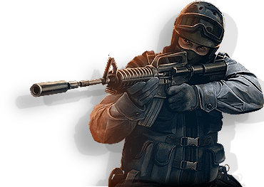

Counter-Strike: Global Offensive (CS:GO) is a multiplayer first-person shooter developed by Valve and Hidden Path Entertainment. It is the fourth game in the Counter-Strike series. Developed for over two years, Global Offensive was released for Windows, macOS, Xbox 360, and PlayStation 3 in August 2012, and for Linux in 2014. Valve still regularly updates the game, both with smaller balancing patches and larger content additions.

The game pits two teams, Terrorists and Counter-Terrorists, against each other in different objective-based game modes. The most common game modes involve the Terrorists planting a bomb while Counter-Terrorists attempt to stop them, or Counter-Terrorists attempting to rescue hostages that the Terrorists have captured. There are eight official game modes, all of which have distinct characteristics specific to that mode. The game also has matchmaking support that allows players to play on dedicated Valve servers, in addition to community-hosted servers with custom maps and game modes. A battle-royale game-mode, "Danger Zone", was introduced in December 2018.
Global Offensive received positive reviews from critics on release, who praised the game for its gameplay and faithfulness to the Counter-Strike series, though it was criticized for some early features and the differences between the console and PC versions. Since its release, it has drawn in an estimated 11 million players per month, and remains one of the most played games on Valve's Steam platform. In December 2018, Valve transitioned the game to a free-to-play model, focusing on revenue from cosmetic items.
The game has an active esports scene, continuing the history of international competitive play from previous games in the series. Teams compete in professional leagues and tournaments, and Global Offensive is now one of the largest global esports.
Counter-Strike: Global Offensive is the sequel to the popular first-person shooter Counter-Strike: Source, developed by Valve. Global Offensive's development began when Hidden Path Entertainment attempted to port Counter-Strike: Source onto video game consoles.[1][24] During its development, Valve saw the opportunity to turn the port into a full game and expand on the predecessor's gameplay. Global Offensive began development in March 2010, and was revealed to the public on August 12, 2011.[25] The closed beta started on November 30, 2011, and was initially restricted to around ten thousand people who received a key at events intended to showcase Global Offensive. After issues with client and server stability were addressed, the beta was opened up to progressively more people,[26] and at E3 2012, Valve announced that Global Offensive would be released on August 21, 2012, with the open beta starting roughly a month before that.[26] Before the public beta, Valve invited professional Counter-Strike players to play-test the game and give feedback.
There were plans for cross-platform multiplayer play between Windows, OS X, Linux, Xbox 360, and PlayStation 3 players, but this was ultimately dropped so that the PC and Mac versions could be actively updated.[28] On August 21, 2012, the game was publicly released on all platforms except Linux,[29] which would not be released until September 23, 2014.
Since the initial release of Global Offensive, Valve has continued to update the game by introducing new maps and weapons, game modes, and weapon balancing changes.[31] One of the first major additions to the game post-release was the "Arms Deal" update. Released on August 13, 2013, the update added cosmetic weapon finishes, or skins, to the game. These items are obtainable by unboxing cases using in-game keys, accessible through in-game microtransactions.[32][24] Global Offensive has Steam Workshop support, allowing users to upload user-created content, such as maps, weapon skins, and custom game-modes. Some popular user-created skins are added to the game and are obtainable from unboxing them in cases.[33] The creators of the skins are paid when their item is added to a case.[34] These skins helped form a virtual economy in Global Offensive, leading to the creation of gambling, betting, and trading sites.[35] The addition of skins and the associated virtual economy launched Global Offensive's player count past the other games in the Counter-Strike series and is one of the most important updates in the game's history.
Events called "Operations" are held occasionally and can be accessed through purchasable expansion packs in the form of "operation passes." These passes grant access to operation objectives which are spread over different game modes, such as Arms Race and Deathmatch,[37] or in operation-specific game modes, first seen in Operation Hydra, released in May 2017.[38] Completing these challenges rewards the player with XP and the ability to upgrade the operation "coin." The maps in the operations are community made, meaning some of the revenue made goes towards the map designers.
An update in October 2014 added "music kits", which replace the default in-game music with music from soundtrack artists commissioned by Valve. If a player with a music kit equipped becomes the round's most valuable player, their music will play for others at the end of the round. There is a feature that allows kits to be borrowed, and kits can be sold and exchanged through the Community Market.
In 2016, the game saw two remakes of original Counter-Strike maps, as well as the introduction of Prime matchmaking and additional items. As a part of the Operation Wildfire promotion, Nuke was remade and re-released in February with the primary goals being to balance the map and make it more aesthetically pleasing.[41] In April, Prime matchmaking was added to the game. To partake in this mode, the user had to have a verified phone number connected to their account. It was introduced in an attempt to prevent legitimate players from playing with cheaters or high-skilled players playing on alternative, lower ranked accounts, a practice colloquially known as "smurfing".[22] Inferno, another original map, was re-released in October. Valve said they had three reasons behind the remake: "to improve visibility; to make it easier to move around in groups; and to tune it with player feedback."[42] Also in October, consumable items called graffiti were added to the game. These items replaced a feature present in the previous iterations of the series called sprays. Previously, players could customize their sprays. Graffiti ideas can be uploaded to the Steam Workshop in the similar manner as gun skins and players can buy and trade the existing graffiti in game.[43] One month later, glove skins were added.
In September 2017, Valve Company worked with the publisher Perfect World to release Global Offensive in mainland China. Chinese citizens, with their identification verified, can receive the game for free and earn Prime matchmaking status immediately.[45] The game is played through Perfect World's launcher and contains numerous exclusive changes to the game, including the censorship of skulls and other symbols.[46][47] Some other changes were in the cosmetics in certain maps, for example, the hammer and sickle on Cache and Train were removed.[48] In preparation for the release, multiple cities in China celebrated and heavily promoted its upcoming release.[46][47] Users who played the game during its launch month received free promotional cosmetics.[48][49] In compliance with Chinese law, Valve also had to disclose its loot box gambling odds.
In November 2017, an update to the competitive matchmaking was announced. Called the "Trust Factor", it meant a player's "Trust Factor" would be calculated through both in-game and Steam-wide actions. Factors such as playtime on Global Offensive, times a user has been reported for cheating, playtime on other Steam games, and other behaviors hidden by Valve are taken into consideration when a user's "Trust Factor" is developed. This was done in an attempt to let the community bond back together in matchmaking, as Prime matchmaking separated Prime and non-Prime players from each other. Valve will not let users view their "Trust Factor" or reveal all of the factors deciding one's "Trust".[51][52][53] In August 2018, an offline version of the game was released that allows the players to play offline with bots.
An update released on December 6, 2018, made the game fully free to play. Users who had purchased the game prior to this update were automatically updated to "Prime" status and given modes that can drop cosmetic items. In addition, the new version introduced a battle royale mode called "Danger Zone".
In November 2019, Operation Shattered Web was released. It operated similarly to the previous operations and introduced new character models and a battle pass system.
In April 2020, source code for 2018 versions of Counter-Strike: Global Offensive and Team Fortress 2 were leaked on the Internet. This created fears that malicious users would take advantage of the code to develop potential remote code execution software and attack game servers or players' own computers. Several ongoing fan projects temporarily halted development in wake of this news until better confirmation of the impact of the leak could be determined.[58] Valve confirmed the legitimacy of the code leaks, but stated they do not believe it impacts servers and clients running the latest official builds of either game.[59]